Le blog du XV du Nettoyage
Démarches, délais, prix, précautions : des réponses précises aux questions que l’on se pose après un décès, devant un logement encombré ou insalubre, ou après un événement grave.
Après décès
Démarches, odeurs, assurance, papiers et souvenirs : les réponses aux proches après un décès à domicile.
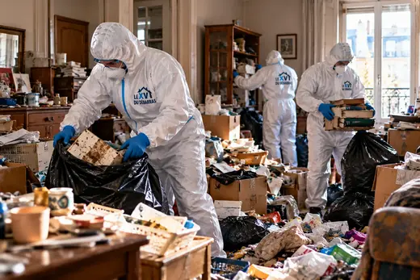
Que faire quand quelqu’un meurt à domicile ?
Qui appeler, dans quel ordre, quels papiers et quels délais : les premières heures, puis le sort du logement.
Lire l’article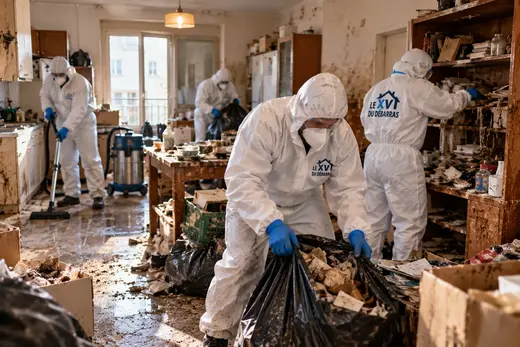
Qui paie le nettoyage après un décès ?
Succession, héritiers, bailleur, assurance : la réponse change selon que le défunt était propriétaire ou locataire.
Lire l’article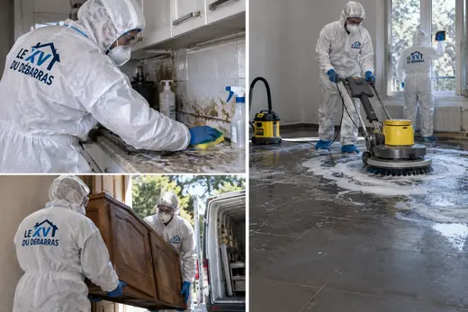
Prix d’un nettoyage après décès : ce qui le fait varier
Il n’existe pas de tarif au mètre carré fiable. Voici les cinq facteurs qui construisent réellement un devis, et la manière de comparer deux offres.
Lire l’article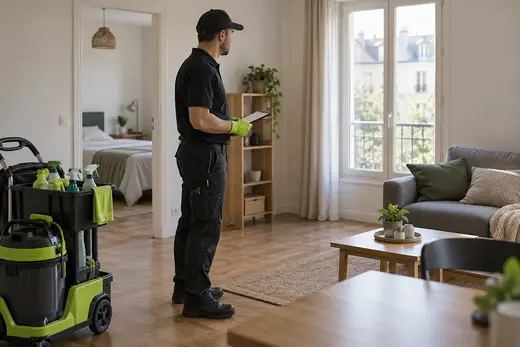
Assurance habitation et nettoyage après un décès
Un décès naturel n’est pas un « sinistre » au sens classique, mais certains contrats prévoient des garanties utiles. Comment le vérifier avant de payer.
Lire l’articleOdeur de décès : combien de temps dure-t-elle ?
Sans intervention, elle peut s’installer pour longtemps. D’où vient cette odeur, pourquoi elle s’accroche, et ce qui la fait réellement disparaître.
Lire l’articleDécès découvert tardivement : dans quel état est le logement ?
Quand une personne n’est retrouvée qu’après plusieurs jours, le logement change. Ce qui est touché, ce qui est risqué et comment s’y prendre.
Lire l’article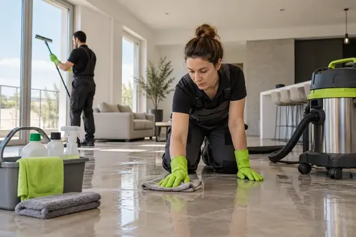
Nettoyer soi-même après un décès : jusqu’où aller ?
Certaines tâches sont à votre portée, d’autres non. Un tri honnête entre ce qui peut se faire en famille et ce qui doit être confié.
Lire l’articleMatelas, parquet, canapé après un décès : que garder, que jeter ?
Tout ce qui a absorbé des fluides ne se récupère pas de la même façon. Un guide matériau par matériau pour trancher sans hésiter.
Lire l’article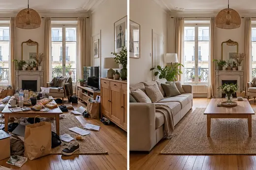
Vendre ou relouer un logement après un décès
Un logement où une personne est décédée peut parfaitement être vendu ou reloué, à condition de le remettre en état et de s’y prendre dans l’ordre.
Lire l’article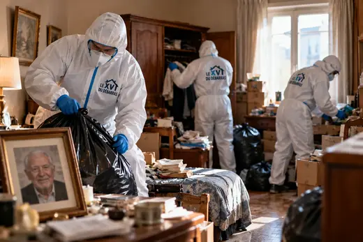
Souvenirs et papiers à sauver après un décès
Avant tout nettoyage ou débarras, il faut mettre à l’abri ce qui ne se remplace pas : papiers, photos, objets de valeur et petits souvenirs.
Lire l’articleSyndrome de Diogène
Reconnaître, aider, protéger et vider : comprendre l’accumulation sans brusquer la personne.
Reconnaître le syndrome de Diogène : les signes qui comptent
Un logement encombré ne suffit pas à parler de Diogène. Voici les signes concrets, ce qui les distingue du simple désordre, et le moment où il faut réagir.
Lire l’article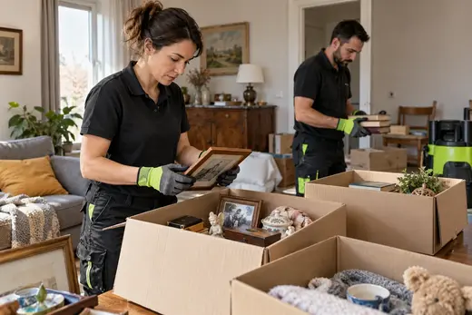
Aider un proche qui vit dans l’encombrement
Quand quelqu’un de cher vit au milieu des piles et refuse l’aide, la patience et la méthode valent mieux que le grand ménage par surprise.
Lire l’article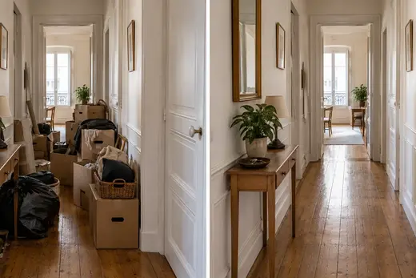
Syndrome de Diogène et location : que risque le locataire ?
Dans un logement loué, l’encombrement n’est pas qu’un problème personnel : le bail, l’assurance et le voisinage entrent en jeu, mais des solutions existent avant le tribunal.
Lire l’articleVider un logement Diogène : les étapes dans l’ordre
Un vidage réussi n’est pas une course aux sacs-poubelle : c’est une suite d’étapes qui protège les personnes, les objets qui comptent et le logement.
Lire l’articleSyndrome de Diogène : tutelle, curatelle et protection juridique
Quand l’aide amiable ne suffit plus, la loi prévoit des mesures de protection. Voici ce qu’elles sont, comment les demander et ce qu’elles changent pour le logement.
Lire l’article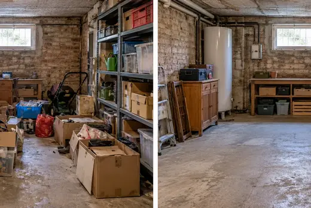
Un voisin qui accumule : que faire concrètement ?
Odeurs, cafards, palier encombré : vivre à côté d’un logement très chargé use les nerfs. Voici comment agir sans envenimer les choses, et à qui s’adresser.
Lire l’article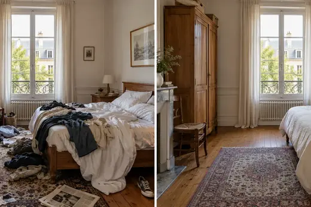
Éviter la rechute après un nettoyage Diogène
Un logement remis à neuf n’est qu’un début. Ce qui évite le retour des piles, c’est le suivi, le lien et des règles simples que la personne peut tenir.
Lire l’articleTrier sans brusquer : garder les objets qui comptent
Dans un logement chargé, chaque objet a une histoire. Une méthode douce permet de faire de la place sans arracher à la personne ce qui lui est cher.
Lire l’articlePrix d’un nettoyage Diogène : comprendre un devis
Pourquoi deux logements voisins ne coûtent pas la même chose à remettre en état, comment lire un devis et où chercher un coup de pouce.
Lire l’article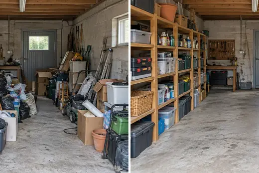
Diogène, collectionnisme, accumulation : ce qui les distingue
Un salon rempli de livres n’a rien à voir avec un appartement envahi de déchets. Voici les mots justes et les critères pour ne pas tout mélanger.
Lire l’articleLogement insalubre
Droits, signalements, moisissures, nuisibles : ce que dit la loi et ce qu’il faut faire.
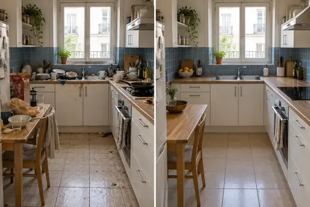
Logement insalubre : ce que dit la loi, en clair
On emploie « insalubre » pour tout logement dégradé, mais le droit distingue plusieurs situations. Voici les notions, les autorités compétentes et les recours.
Lire l’articleSignaler un logement insalubre : les démarches pas à pas
Locataire, propriétaire occupant ou voisin : voici dans quel ordre agir, qui contacter et quelles preuves rassembler pour être entendu.
Lire l’article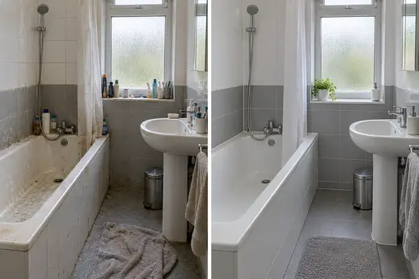
Moisissures sur les murs : les vrais risques et la bonne méthode
Ni drame ni détail : les moisissures disent quelque chose de l’état du logement et de l’air qu’on y respire. Voici ce qu’on sait, et ce qu’il faut faire.
Lire l’articleRats, souris et cafards dans un logement dégradé : agir dans le bon ordre
Quand les nuisibles s’installent, traiter seulement le produit ne suffit pas. Voici pourquoi ils viennent, comment les repérer et par où commencer.
Lire l’article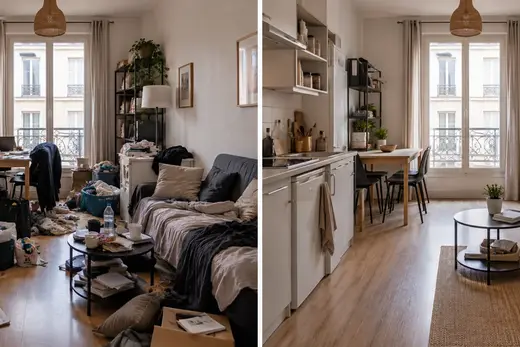
Locataire d’un logement insalubre : quels sont vos droits ?
Vivre dans un logement dégradé n’est pas une fatalité juridique. Voici ce que le locataire peut demander, obtenir, et les erreurs qui font perdre des droits.
Lire l’articlePropriétaire d’un logement dégradé : vos obligations et vos marges de manœuvre
Un logement qui se dégrade engage son propriétaire, loué ou non. Voici ce que la loi attend de vous, ce que vous risquez et comment reprendre la main sereinement.
Lire l’article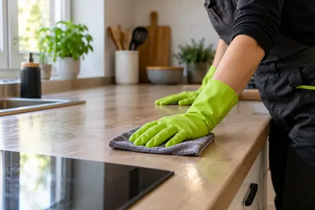
Odeurs tenaces dans un logement : comment les traiter pour de bon
Aérer et parfumer ne suffit pas quand une odeur s’est installée dans les murs. Voici d’où elle vient, comment la débusquer et la supprimer durablement.
Lire l’articleDégât des eaux oublié : ce qui se passe derrière les murs
Une fuite discrète peut durer des mois avant qu’une tache ne trahisse le problème. Voici comment la repérer, la déclarer et remettre le logement en état.
Lire l’articleEnfants et logement insalubre : les risques et comment les protéger
Un logement dégradé n’est jamais anodin pour un enfant. Voici les risques réels, les gestes qui protègent tout de suite et les soutiens à solliciter, sans culpabilité.
Lire l’articleMénage ou entreprise spécialisée : comment choisir pour un logement très dégradé
Entre une aide ménagère, un service de débarras et un nettoyage spécialisé, les différences sont réelles. Voici comment décider et quelles questions poser.
Lire l’articleScène de crime
Un sujet grave traité avec sobriété : autorisations, protection de l’équipe, aide aux victimes.
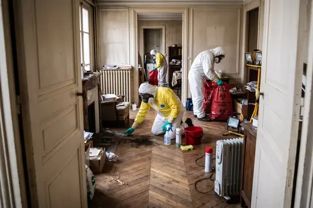
Nettoyage après scène de crime : le déroulé d’une intervention
Après un drame, un logement ne peut pas rester en l’état. Voici comment se déroule, calmement et dans l’ordre, la remise en état par une équipe spécialisée.
Lire l’article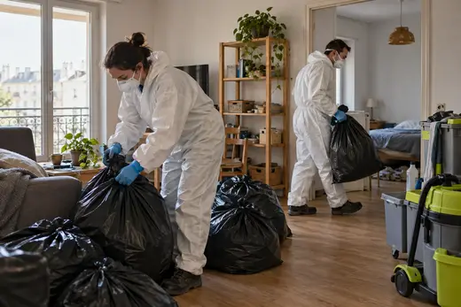
Qui peut commander un nettoyage après une scène de crime ?
Au moment où l’on ne sait plus vers qui se tourner, une question revient : qui a le droit de demander cette intervention, et qui la finance ? Réponses claires.
Lire l’article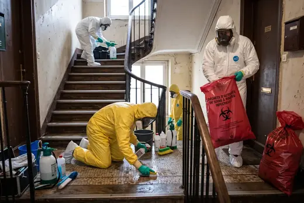
Après un événement grave chez soi : quand peut-on rentrer ?
Quand un drame s’est produit dans votre logement, la question du retour est à la fois pratique et intime. Voici des repères pour avancer sans vous brusquer ni vous exposer.
Lire l’articleScellés levés après l’enquête : que se passe-t-il ensuite ?
Quand l’enquête s’achève et que les lieux vous sont rendus, une nouvelle phase commence. Voici ce que signifient les scellés et comment aborder la suite.
Lire l’articleProduits ménagers ou produits professionnels après un drame ?
Quand on veut effacer au plus vite, on attrape ce qu’on a sous la main. Voici pourquoi cela ne suffit pas, et ce que font réellement les professionnels.
Lire l’articleRisques biologiques : comment une équipe se protège sur un chantier sensible
Sur un chantier après un drame, le danger ne se voit pas toujours. Voici de quoi il s’agit, comment il se mesure, et ce qui protège réellement les intervenants.
Lire l’article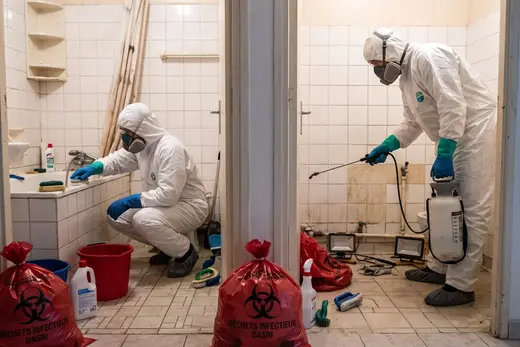
Odeur de sang dans un logement : comment on l’élimine vraiment
Elle est discrète, mais impossible à ignorer pour celui qui revient chez lui. Voici d’où vient cette odeur, pourquoi elle s’accroche et comment la supprimer.
Lire l’article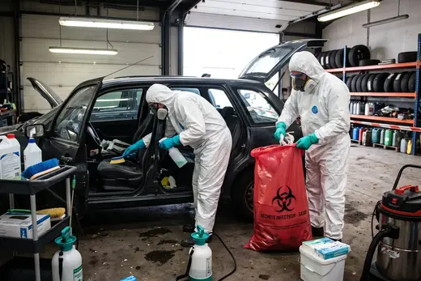
Nettoyage d’un véhicule après un événement grave : comment ça se passe
Un véhicule n’est pas un petit logement : mousses, tissus et ventilation y concentrent odeurs et souillures. Voici la marche à suivre, de la restitution à la remise en service.
Lire l’articleAide aux victimes et aux proches : à qui s’adresser après un drame
Dans les jours qui suivent un événement grave, on ne sait plus par où commencer. Voici les relais à connaître, du soutien psychologique aux démarches juridiques.
Lire l’articleUne intervention discrète : concrètement, ce que nous mettons en place
Après un événement grave, personne ne souhaite que le quartier le sache. Voici les gestes précis qui protègent votre intimité pendant le chantier.
Lire l’articleZones et lieux
Paris, Seine-et-Marne, maison, appartement, copropriété, été : les particularités de chaque terrain.
Nettoyage extrême en Seine-et-Marne : repères pour agir sans se perdre
Un département étendu, des villes denses et des villages isolés : voici comment s’organise une remise en état dans le 77, et à qui s’adresser.
Lire l’articleNettoyage extrême à Paris : ce que change chaque arrondissement
Du studio du 11e à l’immeuble haussmannien du 8e, la capitale impose ses contraintes. Voici comment elles se traitent concrètement.
Lire l’articleMaison ou appartement : en quoi le nettoyage diffère
La surface ne dit pas tout. Une maison et un appartement posent des problèmes différents, d’accès, de volumes, de matériaux et de voisinage.
Lire l’articleCopropriété : que faire des parties communes après un incident
Un événement dans un lot peut laisser des traces sur le palier, l’escalier ou les gaines. Voici qui décide, qui paie et comment rester discret.
Lire l’articleChaleur d’été : pourquoi les délais comptent davantage
Quand le thermomètre monte, un logement touché évolue vite. Voici ce que la chaleur change, ce qu’il faut faire sans attendre et comment nous nous organisons.
Lire l’article